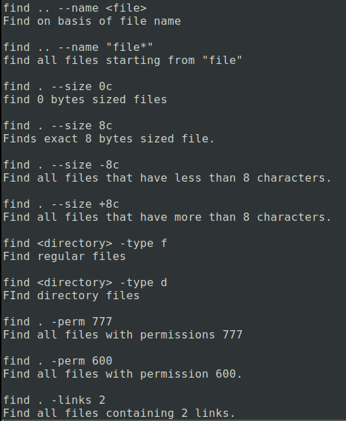
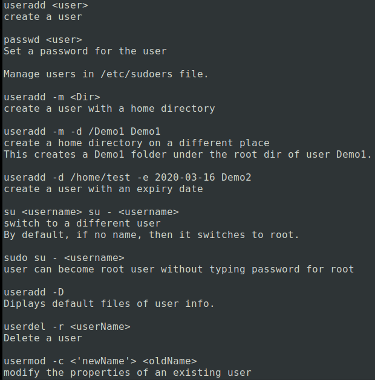

What is LINUX ?
Linux is a multi user, multi-tasking and open source operating system. Linux acts as an interface between the application software and hardware. You can find Linux operating system mostly in servers, and also in many areas such as smartphones, cars, home appliances etc.
The Linux OS was developed by Linus Torvalds in 1991, which sprouted as an idea to improve the UNIX OS. He suggested improvements but was rejected by UNIX designers. Therefore, he thought of launching an OS, designed in a way that could be modified by its users.
Structure Of Linux Operating System
Kernel
Linux kernel is the core part of the operating system. It establishes communication between devices and software. Moreover, it manages system resources. It has four responsibilities:
Device Management
A system has many devices connected to it like CPU, a memory device, sound cards, graphic cards, etc. A kernel stores all the data related to all the devices in the device driver (without this kernel won't be able to control the devices). Thus kernel knows what a device can do and how to manipulate it to bring out the best performance. It also manages communication between all the devices. The kernel has certain rules that have to be followed by all the devices.
Memory Management
Another function that kernel has to manage is the memory management. The kernel keeps track of used and unused memory and makes sure that processes shouldn't manipulate data of each other using virtual memory addresses.
Process Management
In the process management, kernel assigns enough time and gives priorities to processes before handling CPU to other processes. It also deals with security and ownership information.
Handling system calls
Handling system calls means a programmer can write a query or ask the kernel to perform a task
System Libraries
System libraries are special programs that help in accessing the kernel's features. A kernel has to be triggered to perform a task, and this triggering is done by the applications. But applications must know how to place a system call because each kernel has a different set of system calls. Programmers have developed a standard library of procedures to communicate with the kernel. Each operating system supports these standards, and then these are transferred to system calls for that operating system.
The most well-known system library for Linux is Glibc (GNU C library).
System Tools
Linux OS has a set of utility tools, which are usually simple commands. It is a software which GNU project has written and publish under their open source license so that software is freely available to everyone.
With the help of commands, you can access your files, edit and manipulate data in your directories or files, change the location of files, or anything.
Development Tools
With the above three components, your OS is running and working. But to update your system, you have additional tools and libraries. These additional tools and libraries are written by the programmers and are called toolchain. A toolchain is a vital development tool used by the developers to produce a working application.
End User Tools
These end tools make a system unique for a user. End tools are not required for the operating system but are necessary for a user.
Some examples of end tools are graphic design tools, office suites, browsers, multimedia players, etc.
Why Use Linux ?
Choosing Linux distribution
Linux vs Unix
File Systems in Linux
notes
Linux booting process
notes
Linux Basics Command Cheatsheet

From Here

--------------------------------------------------------


Linux File Security
Every Linux system have three types of owner:
User
A user is the one who created the file. By default, whosoever, creates the file becomes the owner of the file. A user can create, delete, or modify the file.
Group
A group can contain multiple users. All the users belonging to a group have same access permission for a file.
Other
Any one who has access to the file other than user and group comes in the category of other. Other has neither created the file nor is a group member.
Users and groups can be locally managed in /etc/psswd or /etc/group

File Permissions
All the three owners (user owner, group, others) in the Linux system have three types of permissions defined.
Read (r)
The read permission allows you to open and read the content of a file. But you can't do any editing or modification in the file.
Write (w)
The write permission allows you to edit, remove or rename a file. For instance, if a file is present in a directory, and write permission is set on the file but not on the directory, then you can edit the content of the file but can't remove, or rename it.
Execute (x)
In Unix type system, you can't run or execute a program unless execute permission is set.But in Windows, there is no such permission available.
I have a file testFile and a directory testDir.
Here, The first symbol "-" represents that it is a regular file.
In directory, symbol is "d".
Now,from remaining nine letters, first triplet represents the permission for user owner. Second triplet represents the permission for group owner. Third triplet represents the permission for other .
Linked Files
A link is a connectivity between the filename and the actual data byte in the disk space. More than one filename can link to the same data.
There are two types of Links :
Hard Links
They are the low-level links. It links more than one filename with the same Inode and it represents the physical location of a file
I have an empfile and i create a link file using ln command.
A new file got created of similar size, with a same inode number.
If i delete the original file, still new file with same inode number will be present.
For a directory, hard links are not allowed.
Soft Links(Symbolic Links)
Soft links are very common. It represents a virtual or abstract location of the file. It is just like the shortcuts created in Windows. A soft link doesn't contain any information or content of the linked file, instead it has a pointer to the location of the linked file. In other words, a new file is created with new Inode, having a pointer to the Inode location of the original file.
I have a file and i create a soft link file using ln -s command.
A new file got created different inode numbers that differ by 1.
If i delete the original file, new link file becomes invalid.
Linux Processes
In an operating system, there are many programs that take place on computer's RAM. These programs may be run by OS itself or a user, such programs are called 'Processes.'
Linux Networking
Every computer is connected to some other computer through a network whether internally or externally to exchange some information. This network can be small as some computers connected in your home or office, or can be large or complicated as in large University or the entire Internet.
Maintaining a system's network is a task of System/Network administrator. Their task includes network configuration and troubleshooting
Let's look at some networking commands:
VI editor
notes
![Alan Smith](data:image/png;base64,iVBORw0KGgoAAAANSUhEUgAAANAAAADzCAMAAADAQmjeAAABCFBMVEX///8AAAD4vxH/xxL8whH/yBL/xBH6+vrd3d
38/Pzx8fHOzs7FxcX19fVdXV3s7Ozk5OSgoKCUlJS7u7uHh4dmZmZVVVUzMzPU1NRubm6zs7Pa2to+Pj5ISEhNTU3Ly8t9fX2Ojo6qqqohISETExN0dHS
DZQnAlA0eHh4pKSlDQ0NZWVn4ugDcqQ/lsBBSPwbMnQ5eSQa5jg1pUQengQs3KgSVcwpxVwh3XAiHaAkmHQNUQQZkTQcWEQGfegtHNwX/9NX72Yv
/0WHhtD7WsE/AnD2igzRvWiP/0VD835/+9+f/9Mpyd38tIwP/zD3KojgqJhwVAAAuGgCwo4YjEQD+6r3gxIcgGAMoJ2VSAAAQUUlEQVR4nO1daXviOBLGJ
xAg3B0gCUdCmqQTCCGEdNJHZmePubZn7+3//0/WumxJlkEyMvY+j98vk0kTq15LqipVlYpCIUeOHDly5MiRI0eOHDly5Mjxf49atdnpd7vHx8fdbn88uRgdpS
3RPqh2Lo0QpuN2MW3BYqF0FSZDcNtOWzplNN5F04Fo/X9NU2sHHUgpbSEVsGt6MEZpyymJ8o0cH8MYpy2qFMoC1RaFk1ra0krgRJ6Ph3ra4u7EsRKf7DMaKPIxjI
zrbykOJZr3Wdoib4WMATLeeR+sBVutk7bQ2yA1QRP40YDRacpCb8GFFKEL+Nmi//83KUu9BXIqG8xIrX469X8xSFvuKDSk+IwLhVPW+E7TFjwKTSlClXKH/1U1bckjI
OmUhnGctuQRiMvHMMppiy5EKT6hbK45dbfHRzaNa2ivyyOb/k9sneAhbdmFmO6WOxKNtIUXYQ8+mdQK5X0IXaQtvQC1fQhN0pZegKOdUp91Wq2rM+E/9dOWXgCK0H
Qo8LsvS/iDFUGU+DxV0cXwCXWByipOOJFPqI82QgrxOi2pt4AQauL/b7MiM8GQ8H5LQeBdwITG/i8Yz4HTy22eUAbd01roVVPyfuA/zceLMxifQ4TopMI4coLC4Yc
MRkoQIajK6ijzOApvkTL76QCVg8u7E2UiOdgf50AHBIEdZGZqV9QcDllCWUzqYUIosgC19DURF3o2YFIGjRb2RLk1l0XfB8g1RRNVaEEJb4m4MLfV9X44rhRqUwNkU
bjzbXP7s1MBItQD/znyzhIFSiuAnVUnU9FDnhtLKItnVrTkemjBtYBi8y0RUMrkhH5UMG7Bx1nv6Cpl4UVAhNBE9E7BO/dj92DXEHatwgn03NhM0m3KwosAHbR
yAa8go0sR6hXQFgIYFqZQ+j5DKItRhRs0F1DwswZYRH4cCChln8Al2jBdhlAWw8HwpFMtVLCIgx/+8ONi/sc//fkvP8Fw/CSQHhodLnmZsvAinKO1hqfi1XRd27Q9WI7z
8y+/Fk4D4aG/wJ30MpiahFbn0vuh6hnUT+5i835pm6Zpz54/f7y7+/m3vxLZUSib5ZPFuA/aFMDLHBobZ24YcxNh/c2Y2/bd7z9h2aEjVOUI9VKWXgC01N4Bp3Rm2XNj5
mJCtmWCqTKtv/0dCd8tFSscnyw6c9gv6FSMuQtY2CYP25rd80QIMuj7EMv5DzNMJaC0+PokJDROW/wwsBl9dqP5ALiOkNMwbfHDQOeG985WOnCaXGf+EGKUtvhhQEL3u/lA
Ts57nlD26muho7PYvt6olccTyl49IDh6P8lMkAv0ufXGEcpezSYwlffWbj7W5sUVEMpeNBjayi0qGwPsHs8nskJaIXPeHPQ+vyy3LjrPafD4vHle6zxEKHMVMrgy5nPkHNmutX
z0OK+9del+DREKRVfTBonWv4n3ke0sNoDvzKJ1wjV1LCrtHuOg8OOKAtvqLbW1R+FtbRIXD3+2TwWMu2kz4OFLNmPmyFtp5vqT9+vNgrCx72aBbgtqnrJ2JgoWz9ryj
qsAruuYyw1YXg9LuNTAXLl3P/7ghxs83dYgyy5rU0RXwX1cr2az1Xrz+A2tQjw5trO8N/75KzUtMAZc72dyF30IKS6MDd453uEBOqUFujAI/S0qQ3mXqvwhBLUxr
w/3X/CP9y9L18WKYf7ob5UgtI1ipvgwla2DeBDH2TiWBY9FLv4vWGz4yNBBOSKDZYQTFdmKNwKJTmowgMprbteaQcMz9dMmVD3nh5ofzMtUjQzM+Eywfb2nnDpPsW
G/gPZu6E3W8TNJGcrvl8kb7iHRlo7tcbKxvwPXFpPq5uNYGNnJfCHNC2TGtv95Nl8s5ityNJ3yG74rZpSG7CKgFw5No7Auaxz+EzGhjNQx4aw2OkeHoohifXwa/hhA
NoILyAaRpAh/S2UoLhSZCAllooob57T9HX3LiBiZQBVXdWagZgEnhKkNTWdQo4+iYk2XAdWNfQQqPl0OGG1zZ8TlgKkHgIjVZ36JlXd/69XOkZBQ2qVMZMFxCYRir1I5
3VU2Jr71mrJLR9ZNnL+NuBSWanKluY8QRTGhNE/j/r2ueH8ecZP3Uq+QKiC1iTFVU6hYEyO1Whm/niemxxK15tJKuvpuW+y45zCKUSq6O3i/sZ3kyKuIqWyj4PXGDrX74ZIp7zakcH+A8qrjBwP8R5T4Y8fB
T689avD4GcXgKkShyN2ZOLA1YhRUfEKB4u7zdY4H9rvP9RCiTuxVXosf1Bqxx9I9ktjU9Zsyf6H8gHE6rk55j2MmxaEfug57uMwr5/jvE5WmAloV3rs7WIqFt4f7ZELqwWOmIWfoQIsOhq1OBkGUY6+nUfdYWiF/VZPEMiKcBpLsl5OnJ6XOqc/DFN0f4XdHapf3jaVRGvM21DrjEF5qB70634TsfeOMkn/ELEHjMFX3cKCir5D237hUbOEmdF0q+bweHL7kv0gd1YhUEHXAG+3kg0DA42oGh1UdPiSt2kIJjKRr
6aCTcOxfZtBj+6gpujj0FHG9LfQ4+bTLE7KuCe8idjBd6Q/qkQP+pSXrAHE5A11XUCln6oZxhwASzYKx3qO29U33L+jx0aAkExKckdAXP6O6tIwP6dE1kxqJVQuc5k4wrcfeS9e4Frg1x7bVGesbhwOXu9bpOV4Hj20luBI4sA04tN7BoB59zgbJElxznMXTWptMz0lI+SR1LOIWgtZOFbSBK/H2O6kYHTuK3iIJenu2Qy0fkznncdZBbzU87R1MQt3Dkqm8R2/N36
963xq9P7uhcq1EoqgoPzAhh37dF54p8c/42+LJ3K5G8Zga0Qy6Mzi0/CFCRgLdudGuPffdU9
3lBCwhvkIwgXPrENMgQ+iOak4ZQrccIf3VGFitVnxCuhNSNwwhvrBd/ykPH1EavnrVnRo
4YQiFquk0j+Y7V0elpEag0sZTQU2qbq1AQs5Fwkx7Y2mK0FDQS1lzqMS3pn61hfbrztSuGQuKZjRnxf2cgE9NeyEBFUcYCBrBjrUOFqQg/R/1DlBgvLe6oB253hURnL6OyElF+xEliCedCLtyah0seKxvh7THlgJCA2Hdmc7TF1Xu2iSzpd10+4SmfI4IQachp06q50QraCc0IUOUxB39dept+oXV8O7VTqhMCV4XtEPV6TvSrm9T0JBRDxqtVvOCeNW10IUcnVWOTEAb+6kJ3Yxp9EajUQ/sF14x6CTEvK0m8huSqK4eBW9u3Eiy8odd0UewP67+crYiW6JwXGFTNzqbh7KOCOwpmUBd0Y7v/9I5IlfTn8ytpR3f7XGy+wnyAB72Zm4uVrgRQiIVrtdb+WjWqhcz0DDOtJ1VYowii9Ix9OYlfyfNyNzFd/h4vUf8xqA13vFFC3ojjT9THR9M1FNAYw1OUeZLI7QmBn65o3tYmK9wBG1tUYoy3xmht+Hzgm0xgluK3GjSo8Bqbxbmchuff/2mZyyE5r/ZVjB+Wx4t0XqQXF05tmmto/lsrLu7X3QMhmAYXLcel3RJ0dF1w3PZHhy6l0wYH8G/62PkOSAuS8i0NngoDf5VEzaXAg993sbHY7T/WAhdQfchh7Rb3N9FbRmGxa5kDqTfxN1/NJApQIP3ws8QtT7G+z5/4nc9sz6K+Hwl/TMW/92fDIC3JGaCnpi+Utq32cvEeHT5t0TB73tkveppKwMOxuH5obaRcbmfUzIxPvo9UUOL7tuC/jcthLwj14OwgRfV9G4vq0cRMl3OGL0ETTnttR5CwOoJVhwYYREMvE+OmiZkuvQc3S+oN+luNCQg6vCI8hTRqdBdBWOPNRHy3JAX/MjPS4d+kYBQvENyrXl1/G44HJ6RGyiRvTGdzwGjs9h+UIch5EluzjYvm5nJdecFhGJZPb5tw/22Xp/0B+PGAXlCoIWbG25oC/ZQnHB6yTCel/P5bP3y/PDw+H692NYZ057RjGLa2A6ltneNFe
Px555hRr3hQGcr197eF9NhvJV4h76O8UminSjSQervrGYYc9l2shDM8jyLcwrrGN9kCKFWosr+fUWhPy58b6zhmMZQrOOQMy+GC7o4KYd+2sT1lQXnf8W4wj2WXBTo3akua4/Qe5ktSo3DKkX1cNCVd76TeofOU4wBQABOaYb4RafuBl2JvfnIkdRcVFAmslZjxC065XBTX65r
cjDSVMlh8P7gVe7xAdgpikHIkBzR/YSGUClZAPkMNbXALzpVQmBEWc1KzixDeW0KwvKPilPEmFfl6x0gyij25wVwzRUaTNq/h0kmNT4ms+hUlkMVWH5QQPJVXrParjXffFHQ30AoOTVKDRL4dCqWrwt9GZDl2iiZCo/T7FU6zglOdM9qpog6SFwrnCJAWnCIMviKtg/05nyWLU5vxdFzZNGpZMJgEu0GpYWUCXnv8E3yNAHHUX4+Or2q5KlRxecNWuMxCNkrSYUKLyYp7iETvjAlk4qrkz4kT6gZa4ZAlEmpVvzG9ytiEnIeJAmBKhi5AwoLb5fK58CKJOE9QJlIOWeOBgh4ye2hmzhaDmCBbFCttfvyUnARpYHucKipbROdX+VMeC2OHYIArmMDBll22LwyVQqFayUV/WEYvpPUqO14W8hEsVpQKewZssstJ+UafdF7jKNMat6jbX2VDy90404QVHSwoul8i6tVZe9otLESUjn2u9bq1biUPkIYfj5NGSByBoOb0AVqcw5xuVFthbrJ1XEpnjQf24JfiCEfoAMrLh4dHGgCO
xUXdF4fX3UAxv3jYUQZTwH5ppKeiW2ZK3AiulQ4FXsrYhVrBwFYeBXtqkLy0cfTKU5v8GzsGepFrlQjYxhvMReciRMswLxOJAk1cUHMTrtqu4SN0VfLRsUwCQHcz3iKBtEcGFSxSdpxHLKdOems3ldNQBjGkyBQLksIvsTj6G6fPBr4o9vNkDUnGeqJeq7Q+6vv64UVj5OFvttBfoaOcPuRbXbCNklUKVYyAFm915eZGYOU9YTFjOgBLCLU3TFDDonAxK0f8Isx3zZLW5EU/jK4elTH3BB6uOI8cg/ZLp6eq/h1RT3qGs+nryqkSA6b76YXjXN8qSLK2XYXqJTtZr9arKMBXdX8SXqmXFR9dBbRRluES1Qp90Vsh0j5pI4K8dIFTep+s5TYUyiYbowj2+VGQ2jMLZw+1nbnoTEYU9fint6vFs42UnzUXgmCx5lIWcfPRotRGoyDmyLfPVKRM+XQ3z74rtMctKujSqXXO/VQQgA/nvZ6vUplVK222+0LvzYzFK638IZMpP64OKL85NcIUpb/3XYnTfkyOv9w9Mhk8W0HPy3Brx7ptU4oUjPTYRPKZAMbfbWiQP9NvQWFCd4ZAc92wv2Cjy6o/f4NzJSFvk7N8+vxBj5TrXGk2kK8eHsUJt/nxDc4wPcxHjWZo8HDZjafz5dr7AnHMef0tYrvzy+bl+DrdA/0/ZIl0f04hFglqJE3BA7Y5n0g/JKQD/FqxeuiZxmH/laYUvg
mcGwFK2SklkjVgjbbwmEfhRR+Owfp1xpCLTCMZ/u90PKgT22l60mK3wczavW746YWd6vRG3neQ7WXQDuVHDly5MiRI0eOHDly5MiRI4dW/A/Ywgwd29hHqAAAAABJRU5ErkJggg==)